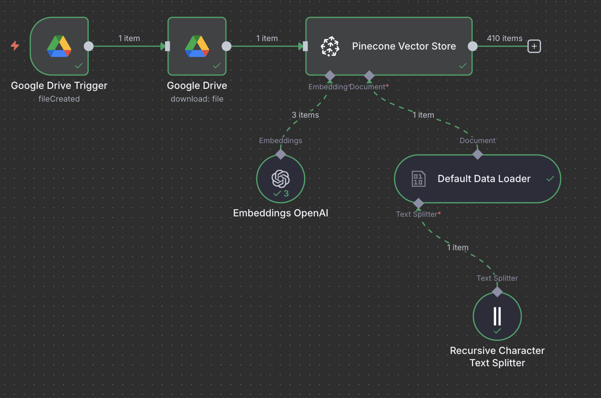
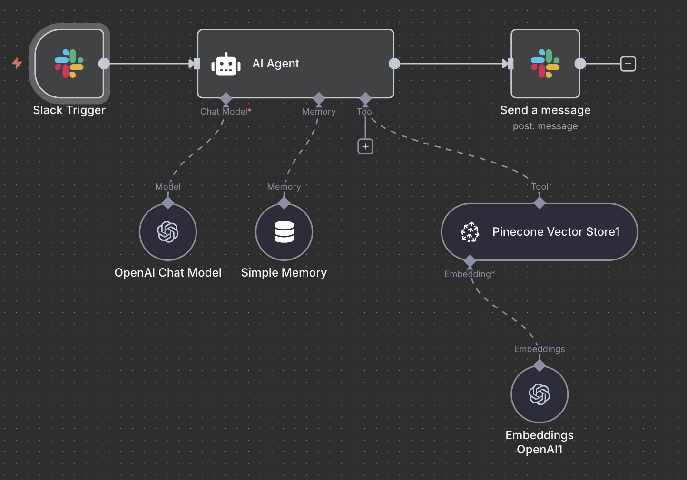

Fase 1: Construcción del Conocimiento
Creando una Memoria Institucional Autónoma
¿Cómo funciona?
Detección Automática
El sistema monitorea una carpeta en Google Drive, activándose instantáneamente al detectar un nuevo documento.
Procesamiento y División
El contenido se divide en fragmentos de información contextual para un análisis granular y preciso.
Vectorización con IA
Cada fragmento se convierte en un "vector" numérico que representa su significado, permitiendo a la IA entender el contexto.
Almacenamiento Inteligente
Los vectores se indexan en Pinecone, una base de datos diseñada para búsquedas semánticas a alta velocidad.

Fase 2: Interacción Inteligente
Un Asistente Experto para Cada Profesional

¿Cómo funciona?
Consulta del Usuario
Un profesional escribe una pregunta en Slack, de forma natural y directa.
Búsqueda Semántica
El Agente de IA busca los fragmentos más relevantes, entendiendo la intención de la pregunta.
Respuesta Inteligente
Un modelo de lenguaje avanzado sintetiza la información y genera una respuesta precisa y clara.
Demostración en Vivo
- Tubo: Tapa Amarilla (Gel Separador).
- Volumen Mínimo: 4 mL de sangre.
- Dato Adicional: Requiere ayuno de 12 horas.
- Tubo: Tapa Lila (EDTA).
- Volumen Mínimo: 2 mL de sangre.
- Dato Adicional: No requiere ayuno.